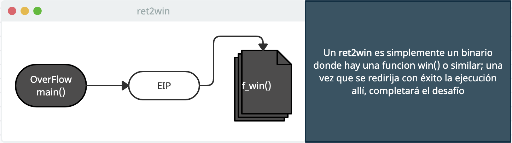
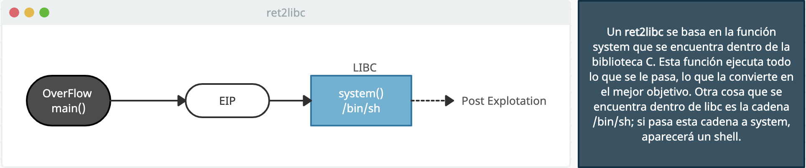
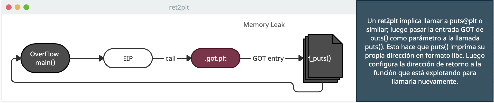
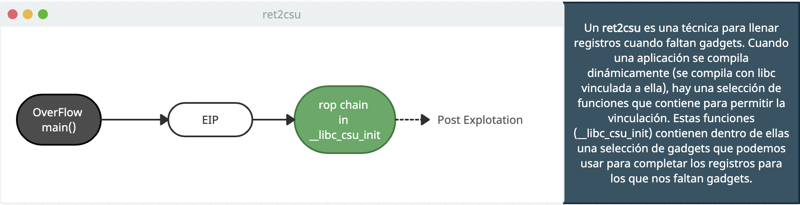

kd❯ g
fffff803'00000000 EB FE jmp short loc_HackinG
~ Linux Exploit Tips
Create Skeleton Exploit
- $ skel binary (private script)
Find Rop Gadget
- $ ropper --file binary --console
- $ (pivot/ELF/x86_64)> stack_pivot
- $ ropper --file binary
- $ ropper --file binary --search "pop rdi"
- $ ROPgadget --binary binary
- $ ROPgadget --binary binary --only "pop|ret"
- $ ROPgadget --binary binary >> gadgets.txt
Find Offset for EIP and More
- $ ./woollymammoth.py offset -t 127.0.0.1 -p 8080 --prefix "HELP "
- $ ./woollymammoth.py eip -e 33634132
- $ pattern 100 (private script)
Find String in Binary
- pwndbg> r (Cntl+C)
- pwndbg> search /bin/cat
- $ strings binary
- $ strings -tx libc.so | grep /bin/sh
- $ rabin2 -z binary
- $ objdump -s libc.so | less
- Use Pwntools
View Section the Binary
- pwndbg> vmmap
- $ objdump -h binary (.data and .bss used for write data)
View Library
View Functions
- $ afl
- $ rabin2 -i binary
- $ readelf -s binary
Find specific function offset in libc
- $ readelf -s libc-2.19.so | grep system@
- Use Pwntools
View Memory
- pwndbg> x/x $rbx (view hexa)
- pwndbg> x/10x $rbx (view 10 hexa)
- pwndbg> x/s $rbx (view string)
- pwndbg> x/10s $rbx (view 10 string)
- pwndbg> x/i $rbx (view assembly)
- pwndbg> x/10i $rbx (view 10 assembly)
- pwndbg> x/gx $rbx
- pwndbg> p/x $rbx (view pointer)
View PLT/GOT Table
View HEAP
Breakpoints
- pwndbg> b/break (Set breakpoint)
- pwndbg> disable (Disable breakpoint)
- pwndbg> del 1 (Delete breakpoint depending id)
- pwndbg> enable (Enable breakpoint)
- pwndbg> info breakpoints/ib (List breakpoints)
- pwndbg> watch (Break on access [read/write])
Running / Stepping
- pwndbg> r/run (Run program)
- pwndbg> s/si (Step over)
- pwndbg> n/ni (Step into)
- pwndbg> finish (Step to next return)
- pwndbg> u (Step to address)
Getting Information
- pwndbg> info registers (Show registers)
- pwndbg> info proc mappings (Show virtual memory map and permissions)
- pwndbg> print/p (Examine symbols)
- pwndbg> backtrace/bt (Stack backtrace)
Fork problem in gdb
- pwndbg> set follow-fork-mode parent
- pwndbg> set disassembly-flavor intel
- pwndbg> set follow-fork-mode child
- pwndbg> set detach-on-fork off
- pwndbg> info inferiors
- pwndbg> inferiors X
Techniques




Links